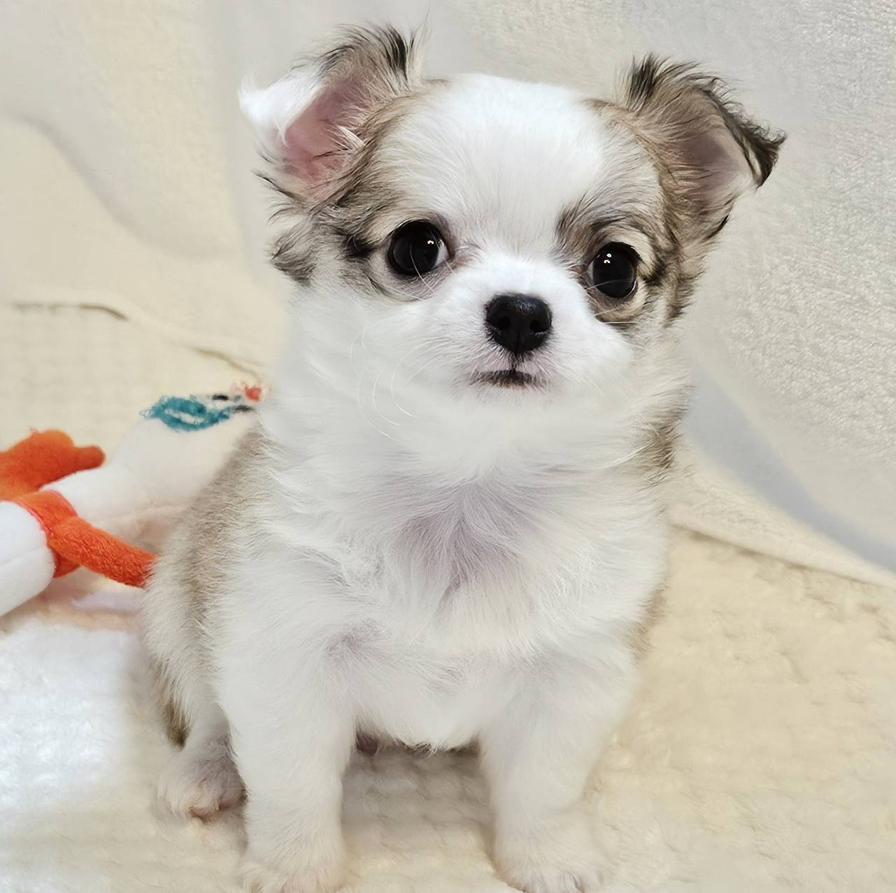

社会人大学生です。自営業をしています。
両親の後を継いで子犬の販売をしながら、福岡市の会社の仕事を在宅で行っております。
| OS | Windowsなど |
|---|---|
| Engine, Frameworks | Node.js, Express など |
| Tool, MiddleWare | Git, PostgreSQL など |
| 資格・免許 | 日商簿記3級、保育士、普通自動車免許 |
連絡先や SNS のアカウントを書きましょう。
専門学校卒業後、保育士として勤務。その後事務職へ転職し、コールセンターにて事務作業とお客さま対応に従事。父が亡くなった事をきっかけにブリーダー業の後を継ぎ、母と共に現在に至る
| 現在までの受賞歴 | まだない |
|---|